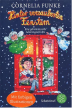

Julia ist neidisch, dass ihr kleiner Bruder Olli einen mit Schokolade gefullten Adventskalender bekommen hat und sie nur einen aus Papier. Aber das auf ihrem Kalender abgebildete Haus glitzert so silbrig und geheimnisvoll, dass Julia der Versuchung nicht widerstehen kann und das erste Fenster des Kalenderhauses offnet. Da bemerkt Julia, dass das Haus bewohnt ist und sie die Menschen, die darin leben, besuchen kann. Ein ungewohnliches Abenteuer beginnt...